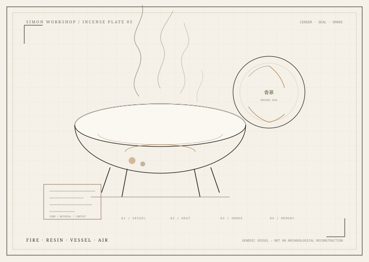

熏香与传统香文化Incense & Ritual
不能只围绕西方香水建立香谱。中国合香、日本香道、阿拉伯 oud 与 bakhoor、南亚 attar、欧洲教堂与格拉斯、古地中海与美洲原住民用香——这些传统必须各自放在历史与文化语境中，而不是混成一种“东方神秘”。
每个条目是一个文化实践的入口，不是对整片地区/宗教的概括。具体仪式、配方、师承与禁忌属于特定社区/流派；请勿把本页当作仪式指导。
香粉、香丸、线香、香篆与隔火 FORMS
合香Blended incense
多种香材按香方配伍，追求整体气味与烟气层次。
隔火熏香Indirect heating
以灰/炭/云母隔火加热香材，避免明火直接燃烧。
香篆Incense seal
香粉压印成连续图案/文字，沿纹路燃烧，兼具计时与观赏。
香道Kōdō
品闻香木、辨识香气、遵循礼法与空间秩序的艺道。
BakhoorMixed incense
沉香、树脂、油与糖/蜂蜜混合，炭火熏衣/熏屋。
AttarOil perfume
以基底油承载花香的油状香水传统，地区/家族工艺各异。
形状不同，燃烧与气味逻辑也不同 MATERIAL FORMS
把香粉做成可存放的形状
传统香丸/香饼通常把香粉与粘合剂（如蜜、枣膏等）混合，制成丸、饼状，可隔火熏或直接焚烧。配方、粘合剂与炮制因时代、地区和香方而异；不是所有古方都适合现代使用。部分历史香方含受保护或需炮制的材料，本页不提供可照做的配方。
现代最常见的燃烧形式
线香、盘香、塔香常由香粉、粘合剂与水经挤压/模具成型后干燥。它们便于运输与日常使用，但燃烧会产生颗粒物与挥发性有机物；通风、时长与空间大小会影响暴露。
清凉、穿透与药用传统的交叉
“龙脑/冰片”涉及天然龙脑香科植物来源与合成冰片等不同材料，不能只按商品名等同。它在传统香方、宗教与中医药中有复杂用途；香道/香水使用与药用是不同领域。不要自行内服、滴眼或用于伤口。

烟上升，材料、器物与语境一起留下
香炉、香篆与烟气是视觉线索，不是仪式指导。不同地区与宗教的用香必须放在各自的历史、师承与社区语境中理解。
沉香、乳香、没药与动物材料 ETHICS
香气背后有贸易、保护、殖民与动物福利。
沉香涉及 CITES 保护与非法采伐；乳香/没药涉及产地生态与采收；龙涎香、麝香、灵猫香与海狸香涉及捕鲸、野生动物保护与动物福利。现代香水大多使用合成替代，但“合成”也需要环境与法规评估。
使用熏香时，燃烧烟雾会产生颗粒物与挥发性有机物。通风、时长、空间与易感人群都需要考虑。